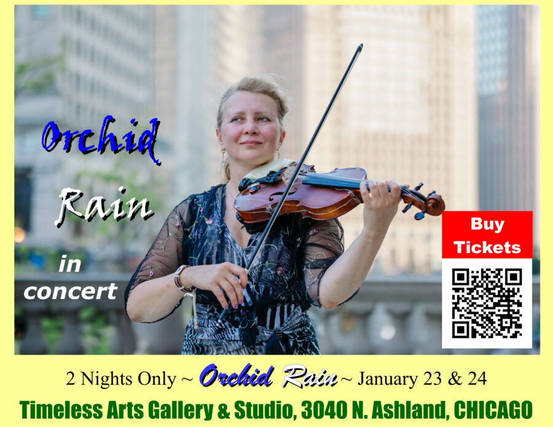

Orchid Rain: CANCELED
Orchid Rain is the “Real Deal!”
Virtuoso Violinist, “Orchid Rain”, combines today’s and yesteryear’s pop, classical, big band music and with her own unique rhythm & style. ……..2 Nights Only……….. ……..January 23 & 24…… ……….6 to 10 PM………..
Ages 10 & Up (Parent required if under 18) @TimelessArtsChicago (3040 N. Ashland)
Doors at 6:00 PM
Performance Starts at 7:00 PM SHARP!
Arrive early, browse this beautifully curated gallery, meet, mingle, enjoy some cheese & wine before the concert. Make yourself at home.
Tickets: $29
Light Refreshments.